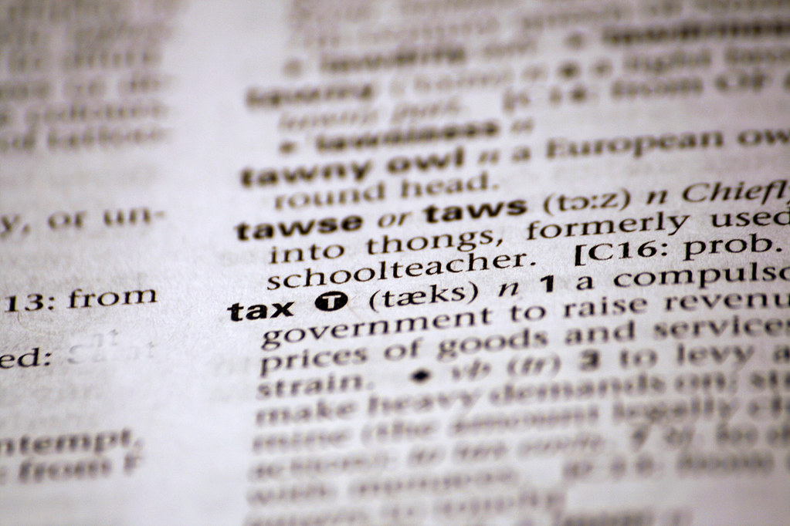

| U.S. Code Title 26: | |||
| Internal Revenue Service | |||
| Home | Sources | Quiz | Contact Us |
The history of the IRS dates back to the Civil War, when Congress enacted an income tax to help fund the war effort. However, the tax was repealed 10 years later, and it was not until 1913 that a permanent income tax was established with the 16th Amendment to the U.S. Constitution.
At first, the responsibility for collecting taxes fell to the Bureau of Internal Revenue, which was established in 1862. The Bureau underwent several name changes and reorganizations over the years, and in 1953 it was renamed the Internal Revenue Service.
Throughout its history, the IRS has been responsible for administering and enforcing tax laws, collecting taxes, and investigating tax evasion and fraud. In addition to its domestic duties, the IRS also has responsibility for enforcing U.S. tax laws overseas.
Over the years, the IRS has faced criticism for its handling of tax cases, and there have been numerous calls for reform. In recent years, the agency has been the subject of controversy over its handling of tax-exempt organizations, particularly in the wake of the 2013 scandal involving the targeting of conservative groups seeking tax-exempt status.
